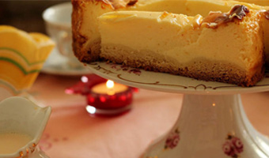

-

Taomlar
Kfc tayyorlash retsepti
Tovuq qanotchalari tayyorlash retseptini ko`pchilik bilishni istaydi.Albatta restoran retseptni oshkor etmaydi va...
-

taomlar
Do`lma tayyorlash-uzum barglaridan kovatok retsepti
Tokli do`lma (kovatok)uzum barglaridan tayyorlanadigan nafaqat o`zbek,balki kavkaz turk va yunon oshxonalarining mashhur...
-

ICHIMLIKLAR
MOXITO TAYYORLASH RETSEPTI
Yozning issiq kunlarida alkagolsiz moxito kokteyli chanqoqni qondirish uchun ajoyib ichimlik sanaladi...
-

DESERTLAR
VAFLI TAYYORLASH RETSEPTI
Ushbu retsept bo`yicha tayyorlanadigan mazali va hushbo`y vafli yetarlicha ko`p bo`ladi
-

SALATLAR
"SHUBA OSTIDAGI SELD"SALATI RETSEPTI
Shuba ostidagi seld yoxud shuba salati eng mashhur ruscha salatlardan biridir.U salatsiz deyarli hech bir bayram,ayniqsa...
-

DESERTLAR
CHIZKEYK TAYYORLASH RETSEPTI-5 TA ENG MAZALI TURI
Chizkeyk-yevropa va amerika oshxonasining klassik pishirig`i.U klassik,likyorli,bananli, shokoladli yoki tvorogli bo`lishi mumkin